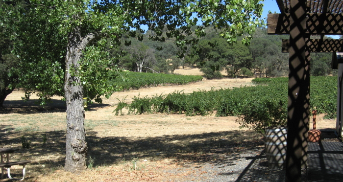

|
North America >
USA >
California >
Amador County >
MonteVina Winery

MonteVina Winery
Plymouth, CA
www.montevina.com
MonteVina winery makes several levels of quality vintages from vineyards in Amador County in the foothills of the Sierra Nevada.
Vintages:
Pinot Grigio California
2008
Aglianico Amador County
2006
Barbera Amador County
2004
2005
2006
Terra d'Oro Amador County Barbera
2004
Terra d'Oro Amador County Sangiovese
2002
Teroldego Amador County
2005
Zinfandel Amador County
2005
Sierra Foothills Zinfandel Amador County
2005
Terra d'Oro SHR Field Blend Amador County Zinfandel
2004
|